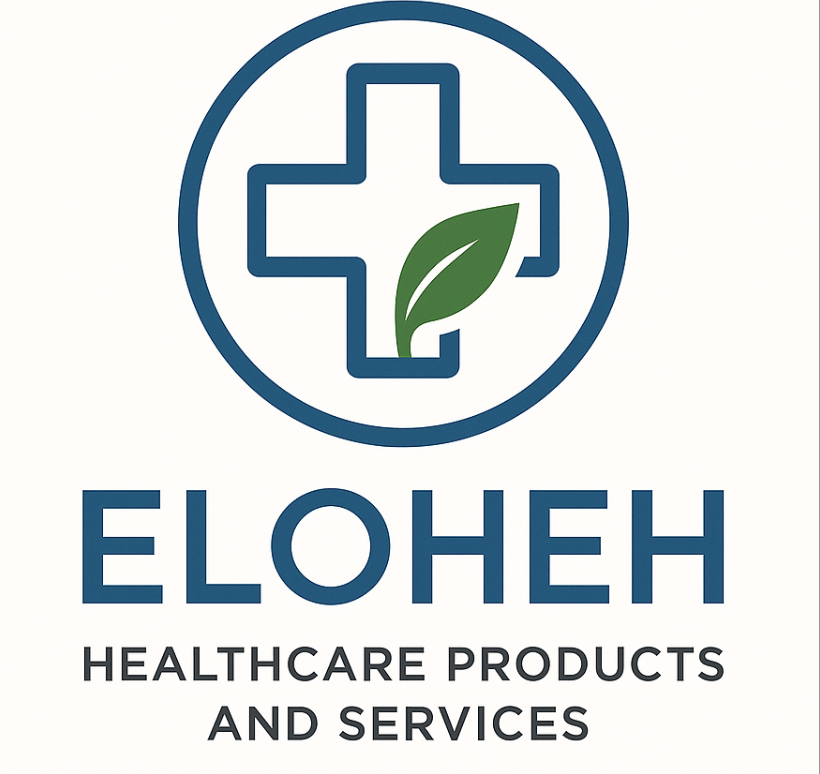

Eloheh- Our Story And History

Eloheh is a healthcare company that provides medical services. We are dedicated to making wellnesss accessible.
From telehealth with medical professionals to providing essential medical supplies we are determined to make healthcare affordable and accesible
Our Founding Story
Eloheh was founded by 5 Purdue Students in 2016 who moved to Indiana for school.
The students had bonded over the fact they had all moved from the west coast and the injustices they had seen within the healthcare community in their counties
From this, the students partnered with medical professionals to address these issues. Eloheh was created to fix the heathcare gap and provide affordable care to underserved communities. The founders launched Eloheh to create quaity universal healthcare.
Company Growth
What started as a small medical supplies company has now grown into a nationwide... and soon to be worldwide platform offering medical supplies, virtual telehealth appointments, and clinical support tools.
By 2024 Eloheh had reached over 3 million users and has partnered with over 600 community clinics nationwide, and we are still growing.
Our Core Values
- Compassion for every user
- Equity in healthcare access
- Integrity
- Transparency
Our Company Goals
- Expand worldwide by 2026
- Expand to 700 community clinics by 2026
- Launch a mobile wellness app by 2026
Eloheh Management Team
Eloheh is a groundbreaking healthcare service company
Get to know our management team
A Group of highly qualified individuals who are changing the world
Suditi Basak- CEO

Suditi Basak is a Junior at Purdue University, double majoring in Accounting and Finance. She is originally from Seattle, WA. At Purdue she is involved in the Brock Wilson Center, Larsen Leaders and the Griswold Consulting Internship. In her free time she is an avid traveller.
Ella Dawes- CFO

Ella Dawes is a junior at Purdue University majoring in Integrated Business and Engineering. She is from Santa Barbara, California and in her free time loves to surf and snorkel. She is an advid ocean safety advocate and her favorite thing to do is explore.
Sarah Lenderman- COO

Sarah Lenderman is a senior this upcoming fall majoring in accounting & finance with a certificate in entrepreneurship. She was born in Charlotte, NC but have lived in Seattle, WA most of her life. She loves spending time with her friends & family, doing anything outdoors, and working with kids!
Allie Xaio- CTO
Allie Xaio is majoring in Business analytics and information management. She is from San Diego, California.
Meet the rest of our team
Bryce Young - Director of Human Resources
Tom Brady - Operations Manager
Kirk Cousins- Head of Product Development
Patrick Mahomes - Medical Director
Quentin Quizon - Clinical Services Manager